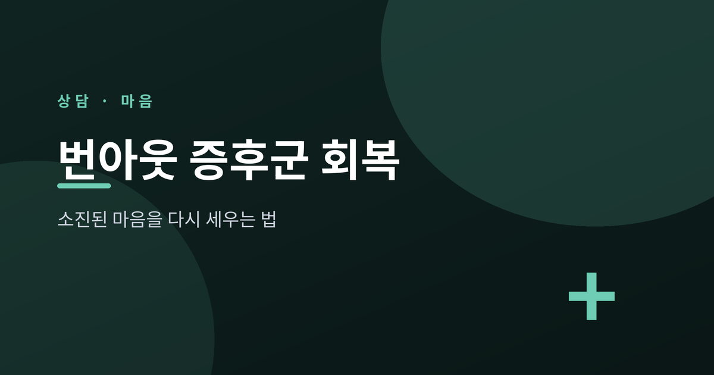
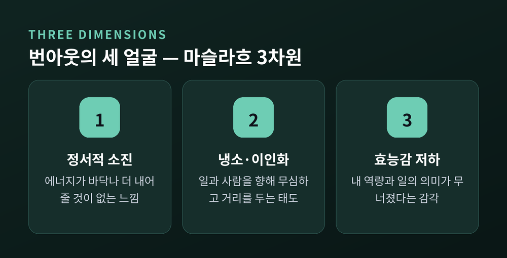
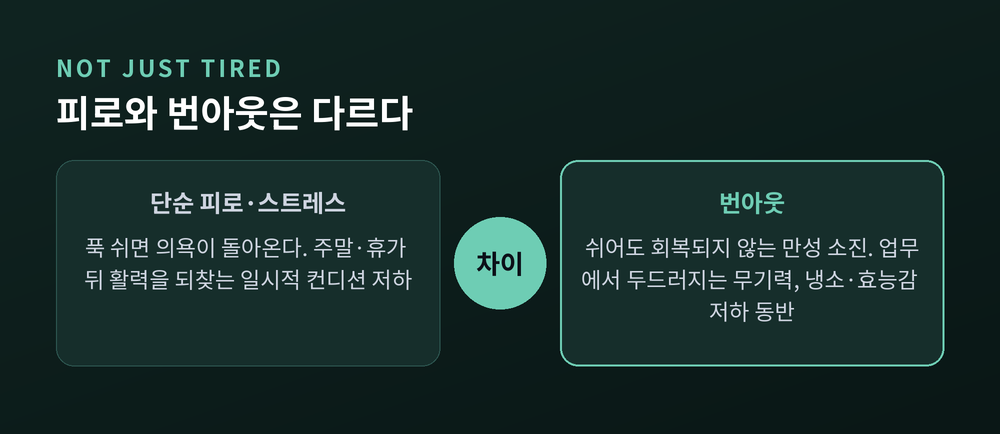
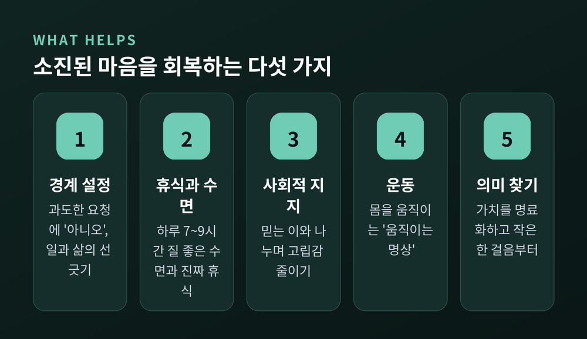

소진된 마음을 다시 세우는 법
번아웃 증후군 회복을 어디서부터 시작해야 할지 막막하신 분들을 위해 준비했습니다. 이 글에서는 번아웃이 무엇인지, 단순 피로나 우울증과 어떻게 다른지, 그리고 일상에서 시도할 수 있는 회복 전략까지 차근차근 정리하겠습니다. 핵심부터 말씀드리면, 번아웃은 충분히 쉬어도 좀처럼 회복되지 않는 만성적 소진 상태이며, 개인의 노력만이 아니라 일터의 구조까지 함께 살펴야 풀립니다.

번아웃은 게으름이 아닙니다.
2019년 세계보건기구(WHO)는 번아웃을 국제질병분류 11판(ICD-11)에 등재했습니다. 분류 코드는 QD85입니다. 다만 여기서 한 가지를 분명히 해 둘 필요가 있습니다. WHO는 번아웃을 의학적 질병이 아니라 "직업적 현상"으로 규정했습니다. 질환의 이름이 아니라, 사람들이 왜 도움을 찾는지를 설명하는 요인에 가깝다는 뜻입니다.
WHO의 공식 정의는 이렇습니다. "성공적으로 관리되지 못한 만성적 직장 스트레스로부터 비롯되는 증후군." 그래서 번아웃은 직업적 맥락에 한정된 현상으로 보아야 하며, 가정이나 인간관계 전반을 설명하는 데에 함부로 옮겨 쓰지 않는 것이 원칙입니다.
이 용어는 1974년 심리학자 허버트 프로이덴버거가 처음 썼습니다. 그는 돌봄 현장에서 일하던 동료들이 정서적·신체적으로 메말라 가는 모습을 관찰하며, 번아웃을 "헌신했던 대의나 관계가 기대한 결과를 내지 못할 때 찾아오는 의욕의 소멸"이라 보았습니다. 흥미롭게도 그 이후 번아웃의 정의는 140가지 이상 제안되어 왔습니다. 그만큼 하나로 못 박기 어려운 개념인 셈입니다.
번아웃 연구의 선구자 크리스티나 마슬라흐는 번아웃을 세 가지 차원으로 이루어진 현상으로 정리했습니다. 그가 만든 마슬라흐 번아웃 척도(MBI)는 오늘날 측정의 표준 도구로 쓰입니다. WHO가 제시한 세 가지 특징도 이 모델과 맞닿아 있습니다.

마슬라흐는 이 세 가지가 대체로 일정한 순서로 진행된다고 보았습니다. 먼저 정서적으로 소진되고, 이어 냉소가 자리 잡고, 끝내 효능감이 떨어지는 흐름입니다. 그러니 "요즘 부쩍 모든 게 시들하다"는 느낌은 가벼운 신호가 아닐 수 있습니다.
여기서 많은 분들이 헷갈려 하십니다.
단순히 피로한 사람은 충분히 쉬고 나면 다시 의욕이 돕니다. 반면 번아웃은 휴식 뒤에도 좀처럼 회복되지 않는다는 점이 결정적으로 다릅니다. 핵심은 '회복 가능성'과 '지속성'에 있습니다.

우울증과의 구분은 더 신중해야 합니다. 우울증은 생물학적·유전적·환경적 요인이 복합적으로 작용하지만, 번아웃은 주로 과도한 업무처럼 특정 상황의 환경적 요인이 큰 비중을 차지합니다. 구분의 실마리는 '범위'에 있습니다. 주말이나 휴가에도 기분이 나아지지 않고 활력이 돌아오지 않는다면 우울증을, 특정 업무 상황에서만 심한 피로와 무기력을 느낀다면 번아웃을 의심해 볼 수 있습니다. 다만 둘은 겹칠 수 있어, 스스로 단정하기는 어렵습니다.
번아웃은 '개인이 약해서' 생기는 일이 아닙니다.
마슬라흐와 라이터는 번아웃을 유발하는 조직적 요인을 '직장생활 6대 영역'으로 정리했습니다. 업무량, 통제, 보상, 공동체, 공정성, 가치입니다. 이 여섯 영역에서 개인과 조직 사이의 불일치가 클수록 번아웃 위험이 커집니다. 특히 감당하기 힘든 업무량은 정서적 소진과 가장 직접적으로 연결되는 요인으로 꼽힙니다.
이 대목이 중요합니다. 회복을 개인의 의지로만 몰아붙이면 절반밖에 풀리지 않는다는 뜻이기 때문입니다.
그렇다면 무엇을 할 수 있을까요. 여러 심리·건강 기관이 공통으로 권하는 방법을 정리했습니다.

조금 덧붙이겠습니다. 휴식은 한 종류가 아닙니다. 잠과 가벼운 움직임 같은 신체적 휴식, 결정에서 벗어나는 정신적 휴식, 지지적인 사람과 보내는 정서적 휴식이 모두 필요합니다. 또 저널링이나 인지행동치료(CBT) 같은 방법은 소진을 지속시키는 부정적 사고의 고리를 끊는 데 도움이 됩니다.
마지막으로 의미의 문제가 있습니다. 빅터 프랭클의 관점에서 보면, 번아웃은 일종의 '실존적 공허'와 닿아 있습니다. 그는 의미를 찾는 세 가지 길을 말했습니다. 세상에 무언가를 주는 창조, 세상에서 무언가를 받는 경험, 그리고 피할 수 없는 상황을 대하는 태도입니다. '나만이 할 수 있는 일을 하고 있다'는 감각이 되살아날 때, 꺼졌던 의욕도 조금씩 돌아옵니다.
물론 개인의 노력만으로는 부족할 때가 있습니다. WHO는 2022년 직장 정신건강 가이드라인을 처음 내놓으며, 업무 설계와 관리, 회복 지원까지 조직이 함께 책임져야 한다고 보았습니다. 정신건강에 1달러를 투자하면 약 4배의 효과를 기대할 수 있다는 분석도 있습니다.
한 가지만 짚고 넘어가겠습니다.
이 글은 일반적인 정보를 전하기 위한 것으로, 전문적인 의학적 진단이나 심리 상담을 대체하지 않습니다. 번아웃은 WHO조차 '질병'이 아닌 '현상'으로 규정했고, 명확한 진단 기준을 두지 않습니다. 그러니 이 글의 내용으로 스스로를 진단하지는 마시길 권합니다. 증상이 2주 이상 이어지거나 일상생활이 어려울 정도라면, 혹은 자해·자살에 대한 생각이 든다면, 지체 없이 정신건강의학과 전문의나 심리 상담 전문가의 도움을 받으시기 바랍니다. (정신건강 상담전화 1577-0199, 자살예방 상담전화 109)
결국 남는 것은 하나입니다. 번아웃은 당신이 약해서가 아니라, 너무 오래 너무 많이 자신을 내어준 끝에 찾아온 신호라는 사실입니다.
"다 타버린 뒤가 아니라, 그 전에 멈추는 용기."
소진의 끝까지 자신을 밀어붙이지 않아도 괜찮습니다. 잠시 멈추고 돌아보는 그 한 걸음이, 회복의 시작이 될 수 있습니다.